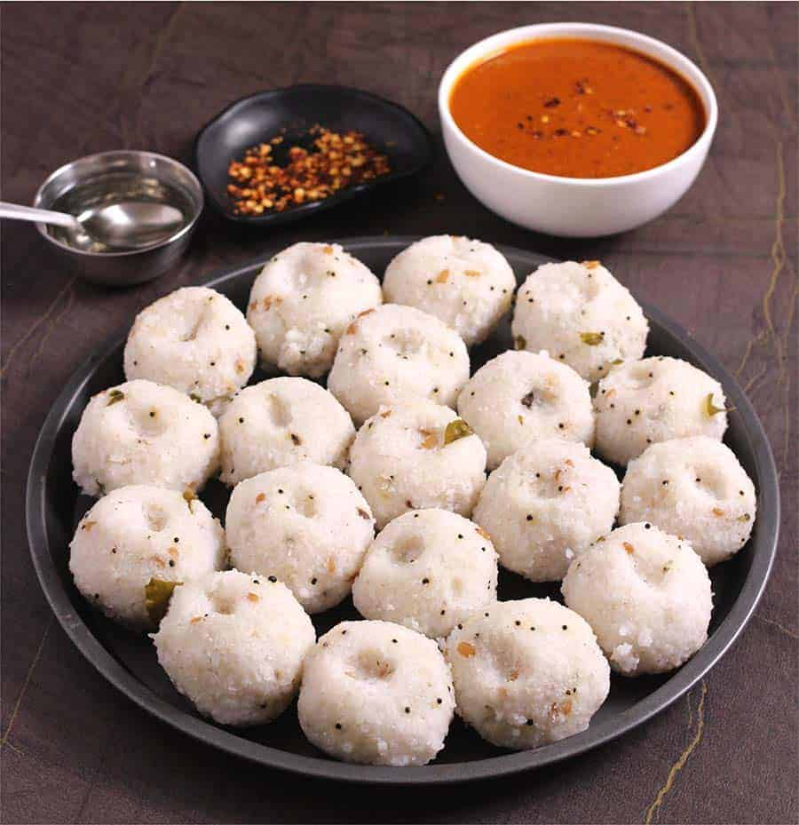

Delicious Mangalorean Pundi

Pundi, a traditional Mangalorean dish, is a simple yet delicious rice dumpling made with rice flour. These steamed dumplings are perfect with coconut chutney or sambar. Here's how you can make them at home:
Ingredients:
- For the Dumplings:
- 1 cup rice flour
- 1/4 cup grated fresh coconut
- 1/4 teaspoon cumin seeds
- 1/4 teaspoon mustard seeds
- 1/4 teaspoon turmeric powder
- 1-2 green chilies (finely chopped)
- 1/2 teaspoon salt (or to taste)
- 1 cup hot water (adjust as needed)
- 1 tablespoon oil
Instructions:
-
Preparing the Tempering:
- Heat oil in a pan and add mustard seeds. Let them splutter.
- Add cumin seeds, green chilies, and turmeric powder. Sauté for a few seconds.
- Add grated coconut and salt, stir well, and cook for 1-2 minutes.
-
Making the Dumpling Dough:
- In a bowl, combine rice flour and the tempering mixture.
- Add hot water little by little, stirring to form a dough. The dough should be soft and slightly sticky.
-
Shaping the Dumplings:
- Divide the dough into small portions and shape them into smooth round balls or cylindrical shapes (as per preference).
-
Steaming the Pundi:
- Steam the shaped dumplings in a steamer for about 15-20 minutes, or until they are fully cooked.
- Check by inserting a toothpick, it should come out clean.
-
Serving:
- Serve the Pundi hot with coconut chutney or sambar.
Enjoy!
Mangalorean Pundi is a comforting and satisfying dish perfect for breakfast or as a snack. The dumplings are soft, fluffy, and pair wonderfully with chutneys or sambar. 😊